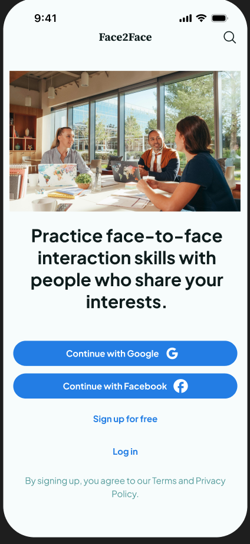
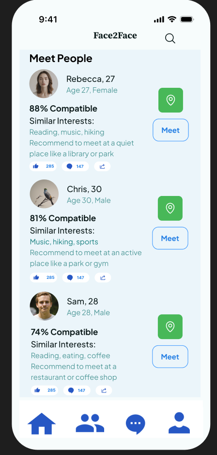
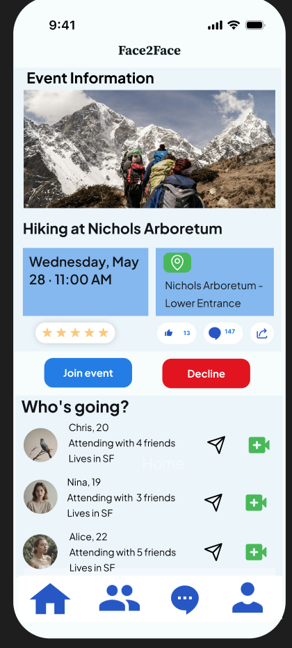
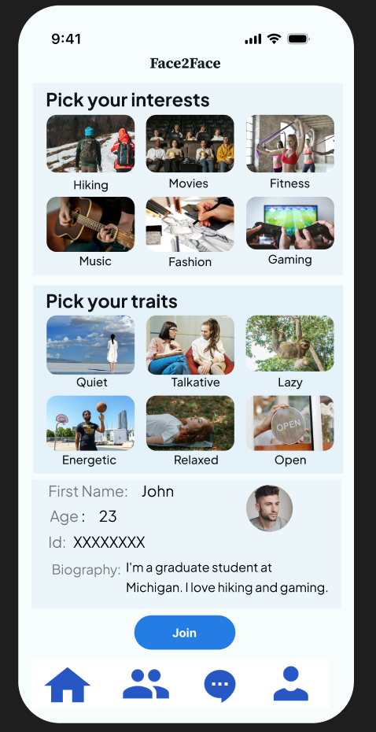
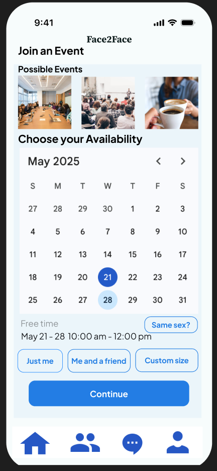
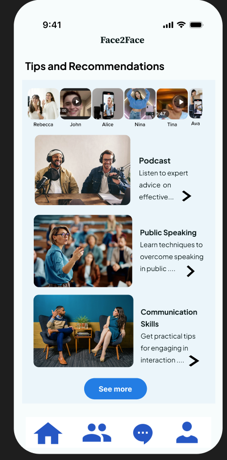
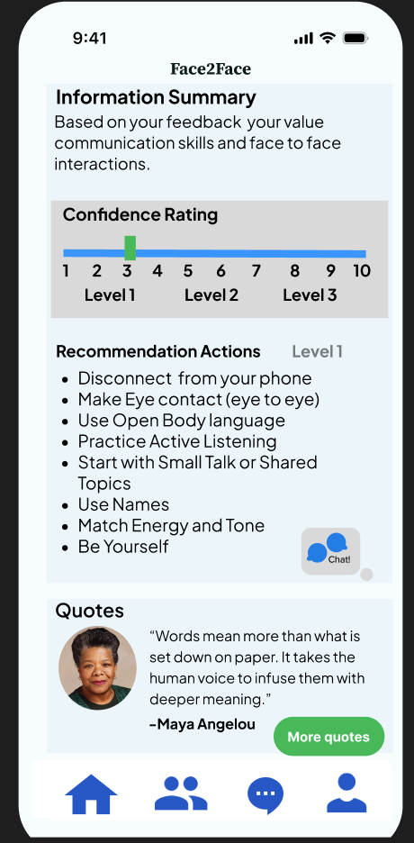
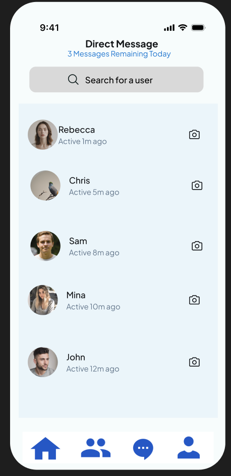

Social media can make communication easier—but also easier to avoid
Students explained that digital communication can help them avoid awkward or confrontational conversations.
Study Abroad · Design Thinking
Face2Face is a mobile app concept designed to help young adults improve their in-person communication skills by connecting them with people who share similar interests and encouraging real-world social interaction.



Overview
Young adults increasingly rely on social media and digital communication, which can make face-to-face interactions more difficult. Our team explored students’ confidence in face-to-face communication and identified ways to strengthen those skills.
The challenge
Problem statement
How might we help young adults become more confident in face-to-face communication while creating opportunities for meaningful social interaction?
Research · User interviews
We interviewed 12 BAU students to understand their communication habits, confidence levels, use of technology, and experiences interacting with new people.
Key insights
Students explained that digital communication can help them avoid awkward or confrontational conversations.
Students often became more confident through school projects, sports, and group activities that required interaction.
Students felt more comfortable communicating with people who had similar interests.
Regardless of their current confidence level, many participants wanted to strengthen their interpersonal communication skills.
Our solution · Face2Face
Face2Face connects users with new people based on their interests, personality traits, and availability. Users create a profile, enter their availability, and are matched with people for activities at public locations.
Prototype
Onboarding, interest selection, matching, scheduling, event information, recommendations, communication feedback, and messaging.





Key features
Users add their interests, personality traits, age, photo, and biography to create more relevant matches.
Users see shared interests and compatibility information before deciding to meet, along with suggested meeting environments based on their preferences.
Users select their availability, join activities, and review the location, time, people attending, and activity details.
After an event, users rate their experience and communication confidence to help personalize future activities.
Podcasts, public-speaking tips, communication strategies, and social interaction advice support continued learning.
My role
I collaborated with my team to research communication challenges among young adults and design a mobile solution that encourages meaningful face-to-face interaction.
Design process
Interviewed students about social interaction and communication.
Identified overreliance on technology and discomfort with unfamiliar social situations.
Explored ways technology could encourage—not replace—real-world interaction.
Designed an app that matches people by interests and organizes in-person activities.
Collected feedback about usability and features.
Improved the design based on what participants found useful or confusing.
Reflection
Face2Face taught me how technology can support human connection instead of replacing it.
Through interviews, prototyping, and user feedback, I learned how research insights can guide product decisions and create solutions centered on real needs.